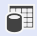

Lesson 3: Reviewing Analysis Results¶
AnyBody contains a number of facilities to investigate the results of an analysis. One of them is the Chart View, which is a standard graphing tool. To open it, click the “Chart 1” tab in the Model View window. To open Chart views manually go to View -> Charts.
Introducing chart view¶
The tree expands to reveal the entire structure of output data generated by AnyBody. Every element in the model generates some form of output from the analysis, so the tree is vast. One of the first nodes you encounter is the MaxMucleActivity variable:
{kind=link}
If you select MaxMucleActivity you will see the following information. The line is flat, because you have analyzed a static standing posture which does not change with time:
{kind=link}
If you want to see details of the real values on the graph, click this button . It adds a table with values below the chart:
{kind=link}
{kind=link}
This chart shows you that to stand upright; the model is using about 13% of its strength. This means that the highest muscle activation level in the system is about 13% of the muscles’ maximum strength.
Hip forces – Standing posture¶
Many biomechanical researchers want to see joint reactions forces, joint moments (by muscles) and muscle activations. For your convenience, the so-called ‘SelectedOutput’ folder contains all those representative values. You will find the folder in the model tree here:
{kind=link}
From this folder, we will take a look at the reaction forces in the right hip joint. Navigate to the ‘Right.Leg.JointReactionForce’ folder by expanding the tree view like this:
{kind=link}
If you select the ‘Hip_ProximoDistalForce’, you will see its graph in the Chart View. The graph will show a constant line instead of a curve.
{kind=link}
From this chart, we could see that there is about 382N force at the right hip joint in the proximodistal direction. If you select another value from the left-hand side of the model tree, the ‘Value’ property of Chart View will change accordingly.
It is possible to select and display several properties simultaneously in Chart View by using the asterisk (*) character. If you double- click the ‘Value’ property of your Chart View, it becomes editable. Let us edit the last ‘Hip_ProximoDistalForce’ term to ‘Hip_*’.
{kind=link}
Now you will see the ‘Hip_MediolateralForce’, ‘Hip_ProximoDistalForce’ and ‘Hip_AnteroPosteriorForce’ in the same Chart View.
Hip forces - Bent posture¶
The final step of this chapter is to change the posture of the human model to see what happens to the hip joint reaction force.
To adjust the posture of the human model, let us open your Mannequin.any file and change the PelvisThoraxExtension value from 0 to -60.
AnyFolder Mannequin = {
AnyFolder Posture = {
…
§AnyVar PelvisThoraxExtension=-60; §
AnyVar PelvisThoraxLateralBending=0;
AnyVar PelvisThoraxRotation=0;
...
Press the F7 button to reload the model and run the RunApplication operation in the model tree. This will show the modified posture of the human model in the Model View.
{kind=link}
Next, we will check the changes in the right hip joint reaction forces.
{kind=link}
As you can see in the above Chart View, the biggest hip joint reaction force component is the ProximoDistalForce, and its value is about 807N. So compared to the normal standing posture model, the value has almost doubled. The forces of the Mediolateral and AnteroPosterior have also increased.
Congratulations! You have just completed your first biomechanical analysis with the AnyBody Modeling System. You are ready to explore the facilities of the system and the model on your own and could try changing the posture in the mannequin.any file and investigate the new results.
You may also want to check our library of previous webcasts for topics of particular interest to you.